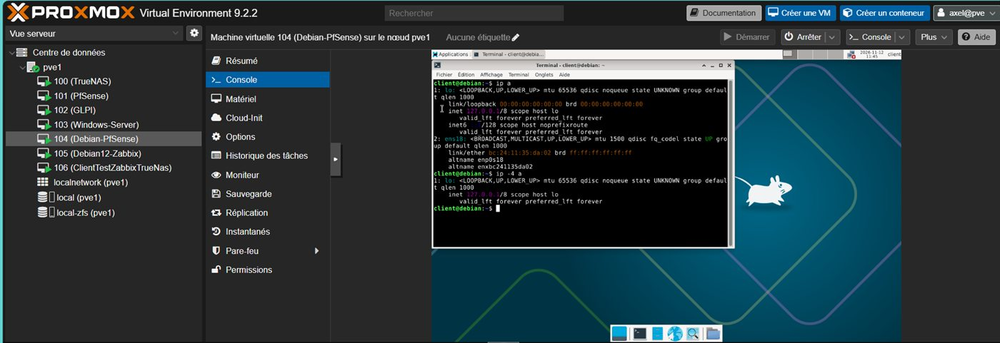

Formation et expériences
Un BTS SIO en alternance pour apprendre en cours et appliquer directement en entreprise.
Ma chronologie
BTS SIO 2e année · option SISR
MyDigitalSchool · en alternance
Sécurité des infrastructures : durcissement Linux et Windows, pare-feu pfSense et VPN, supervision avec Wazuh, Active Directory pour le BTS blanc.
BTS SIO 1re année
MyDigitalSchool · en alternance
Les bases : réseaux (modèle OSI, Cisco Packet Tracer), serveurs web et GLPI, scripts PowerShell, HTML/CSS, JavaScript et C#.
Support technique · SPOOM
- Réponse aux incidents des clients
- Diagnostic des dysfonctionnements : identifier, tester, résoudre
- Démarches commerciales pour présenter les services de l'entreprise
Ce que j'en retiens : savoir expliquer un problème technique simplement à un client.
Objectif : obtenir le BTS SIO
Puis poursuivre vers l'administration systèmes et réseaux, avec une spécialisation en cybersécurité.
Le BTS SIO
Le BTS Services Informatiques aux Organisations est un diplôme Bac+2 qui forme aux métiers de l'informatique en entreprise. Il propose deux options : SLAM (développement) et SISR (réseaux).
Mon option : SISR
Solutions d'Infrastructure, Systèmes et Réseaux
- Installation et configuration de serveurs
- Administration des réseaux
- Cybersécurité
- Maintenance du parc informatique
Mon rythme en alternance
| Jour | Activité | Durée |
|---|---|---|
| Lundi | Cours BTS SIO (école) | 7 h |
| Mardi | Alternance en entreprise | 7 h |
| Mercredi | Alternance en entreprise | 7 h |
| Jeudi et vendredi | Cours et projets techniques | 14 h |
Pourquoi l'alternance ?
- Mettre directement en pratique ce que j'apprends en cours
- Découvrir le fonctionnement réel d'un service informatique
- Gagner en expérience professionnelle dès la formation
Le lab Proxmox
Mes TP de 2e année tournent sur un hyperviseur Proxmox : pare-feu pfSense, serveur GLPI, Windows Server, supervision Zabbix, stockage TrueNAS et VM clientes Debian.
